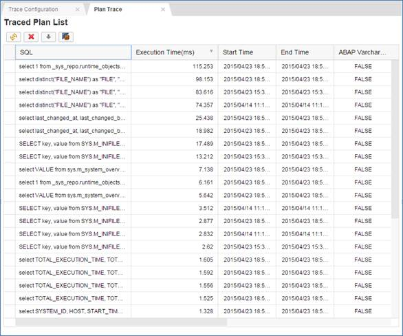

Plan Trace
The plan trace enables you to collect SQL queries and their execution plans, executed in a given time frame for a particular application session. For each SQL query that has been traced, you can drill down the specific execution plan in order to analyze its performance.
As of SPS 10, only 'SELECT' statements are traced with the plan trace.
- You have the TRACE ADMIN system privilege.
- You have the privileges granted by the role sap.hana.ide.roles::TraceViewer; this role is included in the parent role sap.hana.ide.roles::Developer.
- Open the Trace Configuration tab if it is not already open by choosing (Configuration) in the toolbar.
- Choose
 (Edit Configuration) in
the Plan Trace section.
(Edit Configuration) in
the Plan Trace section.The Plan Trace Configuration dialog box appears. It shows that the current trace status is inactive.
- Check that the Active radio button is selected under trace status.
- Optionally enter values for the additional parameters.
- Choose Next.
A summary is displayed of the configuration parameters you have set.
- Choose OK to activate the plan trace.
- Switch to the catalog and execute some SELECT queries in the SQL console.
- Deactivate the trace tool.
Repeat the procedure described above for activating the trace, but make sure that the Inactive radio button is selected.
- Open the traced plan list.
Choose (Plan Trace) in the toolbar or click the Current List of Traces link in the Plan Trace section on the Configuration tab.
The Plan Trace tab opens, displaying a traced plan list, as shown in the example below:

To drill down into further details, you have the following options:
- Save the traced plan list by downloading it. A
trace_log.zip file will be downloaded to your PC,
which you can investigate further using the SAP HANA studio.Note You need to manually change the file extension to plz.
- Show detailed plan information. To do this, select a plan and choose (Show Plan). The Plan Analysis page opens.